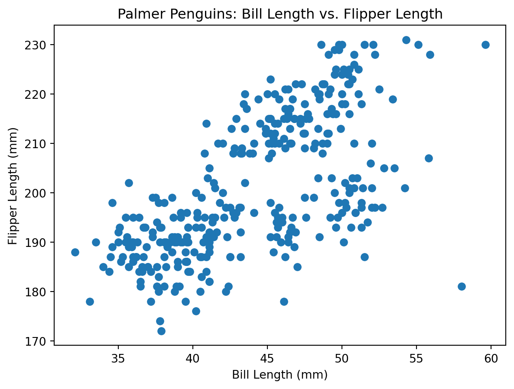
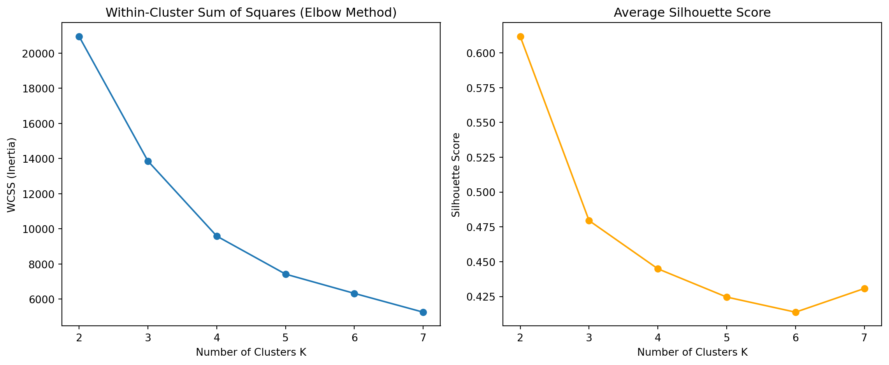

todo: do two analyses. Do one of either 1a or 1b, AND one of either 2a or 2b.
1a. K-Means
Introduction
In this analysis, we implement the K-means clustering algorithm from scratch and apply it to the Palmer Penguins dataset, using bill length and flipper length. We compare our implementation to the built-in KMeans from scikit-learn, visualize clustering steps, and use two metrics—Within-Cluster Sum of Squares (WCSS) and Silhouette Score—to determine the optimal number of clusters.
Data Preparation
We use only the bill_length_mm and flipper_length_mm columns, removing any rows with missing data.
Note
import pandas as pdimport numpy as npimport matplotlib.pyplot as plt# Load the penguins datapenguins = pd.read_csv("palmer_penguins.csv")# Select relevant columns and drop missing valuespenguins_clean = penguins[['bill_length_mm', 'flipper_length_mm']].dropna().copy()print(f"Data shape after dropping NA: {penguins_clean.shape}")penguins_clean.head()
Data shape after dropping NA: (333, 2)
bill_length_mm
flipper_length_mm
0
39.1
181
1
39.5
186
2
40.3
195
3
36.7
193
4
39.3
190
Data Visualization
Before clustering, let’s visualize the data to see if any groups are apparent.
plt.figure(figsize=(7,5))plt.scatter(penguins_clean['bill_length_mm'], penguins_clean['flipper_length_mm'])plt.xlabel("Bill Length (mm)")plt.ylabel("Flipper Length (mm)")plt.title("Palmer Penguins: Bill Length vs. Flipper Length")plt.show()

K-Means Algorithm: Implementation
Below is a simple K-means implementation. At each iteration, we plot the clustering to visualize convergence (for K=3).
The plots above compare the results of our custom K-Means implementation (left) with the scikit-learn built-in KMeans algorithm (right), both using K=3 clusters on the Palmer Penguins data (bill length and flipper length).
Key points from the comparison:
Cluster Patterns: Both algorithms form very similar clusters. The separation among the three groups is visually clear, and both implementations assign the majority of data points to the same clusters. This suggests that our scratch implementation is functioning correctly.
Centroid Locations: The red X’s represent the final centroid positions for each cluster. These centroids are nearly identical between the custom and built-in results, indicating both algorithms converged to almost the same solution.
Consistency and Robustness: Minor differences in the exact cluster assignment of a few points may be visible near the boundaries. This is typical for K-Means due to the random initialization of centroids and potential differences in tie-breaking, but the overall clustering structure is robust.
The close match between the custom and built-in KMeans outputs confirms the validity of our custom algorithm. It also shows that the combination of bill length and flipper length contains enough information to naturally separate the penguins into three distinct groups—corresponding well to species clusters, even though species labels were not used during clustering.
In summary, our custom K-Means implementation produces results nearly identical to the widely used scikit-learn KMeans, validating our approach and illustrating the effectiveness of K-Means for unsupervised learning on well-separated, real-world data.
Evaluating the Number of Clusters
To choose an appropriate number of clusters K for K-Means, we use two common metrics:
Within-Cluster Sum of Squares (WCSS): Measures how close points are to their assigned cluster centers. Lower values indicate tighter clusters.
Silhouette Score: Measures how similar a point is to its own cluster compared to other clusters. Higher values (max 1.0) indicate well-separated, cohesive clusters.
Below, we compute both metrics for K=2 to K=7, and plot the results.
from sklearn.metrics import silhouette_scorewcss = []sil_scores = []K_range =range(2, 8)for k in K_range:# Fit KMeans kmeans = KMeans(n_clusters=k, random_state=42, n_init=10) labels = kmeans.fit_predict(X) wcss.append(kmeans.inertia_) # Inertia is WCSS sil = silhouette_score(X, labels) sil_scores.append(sil)# Plot WCSS (Elbow method)plt.figure(figsize=(12, 5))plt.subplot(1, 2, 1)plt.plot(list(K_range), wcss, marker='o')plt.title('Within-Cluster Sum of Squares (Elbow Method)')plt.xlabel('Number of Clusters K')plt.ylabel('WCSS (Inertia)')plt.xticks(list(K_range))# Plot Silhouette Scoreplt.subplot(1, 2, 2)plt.plot(list(K_range), sil_scores, marker='o', color='orange')plt.title('Average Silhouette Score')plt.xlabel('Number of Clusters K')plt.ylabel('Silhouette Score')plt.xticks(list(K_range))plt.tight_layout()plt.show()

Interpretation: Choosing the Right Number of Clusters
The plots above summarize how cluster quality changes as the number of clusters K increases from 2 to 7:
Elbow Method (WCSS/Inertia): The left plot shows that the within-cluster sum of squares (WCSS) drops sharply as K increases from 2 to 3, and then the decrease becomes much less steep for higher values of K. This “elbow” or point of inflection at K=3 suggests that three clusters provide a good balance between compactness and simplicity.
Silhouette Score: The right plot shows the average silhouette score, which measures how well-separated the clusters are. The silhouette score is highest for K=2 and noticeably drops at K=3, then continues to decrease (or even slightly increase) for larger K. The drop from K=2 to K=3 is expected, since having more clusters can split natural groupings, but the silhouette score at K=3 is still reasonably high.
What is the “right” number of clusters?
The elbow method suggests K=3 is ideal, as that’s where the reduction in WCSS starts to slow down.The silhouette method technically favors K=2 for the highest score, but K=3 is still strong and aligns with known structure in the Palmer Penguins data (three biological species).
Conclusion: Based on both metrics, three clusters (K=3) is the most appropriate choice. This is supported by both the elbow in WCSS and the high (though not maximal) silhouette score, and is consistent with biological expectations for the data.
1b. Latent-Class MNL
todo: Use the Yogurt dataset to estimate a latent-class MNL model. This model was formally introduced in the paper by Kamakura & Russell (1989); you may want to read or reference page 2 of the pdf, which is described in the class slides, session 4, slides 56-57.
The data provides anonymized consumer identifiers (id), a vector indicating the chosen product (y1:y4), a vector indicating if any products were “featured” in the store as a form of advertising (f1:f4), and the products’ prices in price-per-ounce (p1:p4). For example, consumer 1 purchased yogurt 4 at a price of 0.079/oz and none of the yogurts were featured/advertised at the time of consumer 1’s purchase. Consumers 2 through 7 each bought yogurt 2, etc. You may want to reshape the data from its current “wide” format into a “long” format.
todo: Fit the standard MNL model on these data. Then fit the latent-class MNL on these data separately for 2, 3, 4, and 5 latent classes.
todo: How many classes are suggested by the \(BIC = -2*\ell_n + k*log(n)\)? (where \(\ell_n\) is the log-likelihood, \(n\) is the sample size, and \(k\) is the number of parameters.) The Bayesian-Schwarz Information Criterion link is a metric that assess the benefit of a better log likelihood at the expense of additional parameters to estimate – akin to the adjusted R-squared for the linear regression model. Note, that a lower BIC indicates a better model fit, accounting for the number of parameters in the model.
todo: compare the parameter estimates between (1) the aggregate MNL, and (2) the latent-class MNL with the number of classes suggested by the BIC.
2a. K Nearest Neighbors
todo: use the following code (or the python equivalent) to generate a synthetic dataset for the k-nearest neighbors algorithm. The code generates a dataset with two features, x1 and x2, and a binary outcome variable y that is determined by whether x2 is above or below a wiggly boundary defined by a sin function.
# gen data -----
set.seed(42)
n <- 100
x1 <- runif(n, -3, 3)
x2 <- runif(n, -3, 3)
x <- cbind(x1, x2)
# define a wiggly boundary
boundary <- sin(4*x1) + x1
y <- ifelse(x2 > boundary, 1, 0) |> as.factor()
dat <- data.frame(x1 = x1, x2 = x2, y = y)
todo: plot the data where the horizontal axis is x1, the vertical axis is x2, and the points are colored by the value of y. You may optionally draw the wiggly boundary.
todo: generate a test dataset with 100 points, using the same code as above but with a different seed.
todo: implement KNN by hand. Check you work with a built-in function – eg, class::knn() or caret::train(method="knn") in R, or scikit-learn’s KNeighborsClassifier in Python.
todo: run your function for k=1,…,k=30, each time noting the percentage of correctly-classified points from the test dataset. Plot the results, where the horizontal axis is 1-30 and the vertical axis is the percentage of correctly-classified points. What is the optimal value of k as suggested by your plot?
2b. Key Drivers Analysis
todo: replicate the table on slide 75 of the session 5 slides. Specifically, using the dataset provided in the file data_for_drivers_analysis.csv, calculate: pearson correlations, standardized regression coefficients, “usefulness”, Shapley values for a linear regression, Johnson’s relative weights, and the mean decrease in the gini coefficient from a random forest. You may use packages built into R or Python; you do not need to perform these calculations “by hand.”
If you want a challenge, add additional measures to the table such as the importance scores from XGBoost, from a Neural Network, or from any additional method that measures the importance of variables.